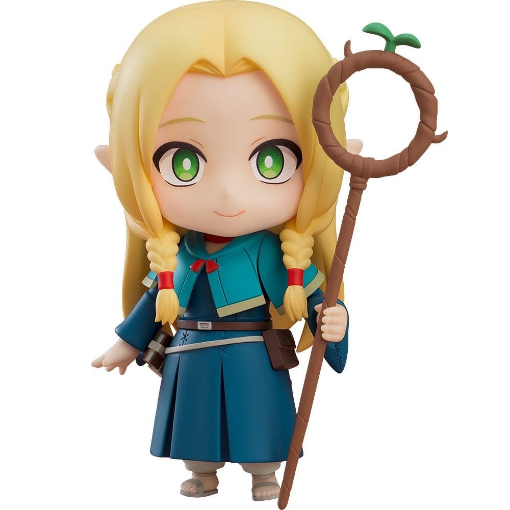
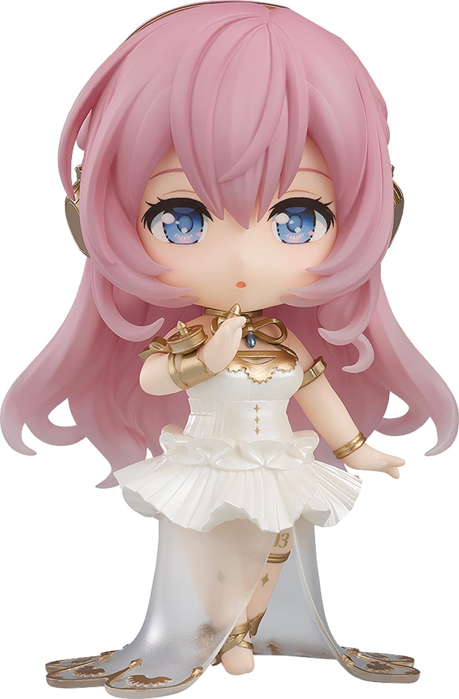

Nendoroids are made exclusively by GoodSmile Company and are quite a bit smaller than other types of figures. They are categorized by the specific art style used when making them. Many people enjoy collecting Nendoroids due to the cute look, but even though they are small, the price is out of many peoples' budgets. Nendoroids can be created for many different characters and franchises, though typically GoodSmile Company uses characters from Japanese media. I wouldn't recommend these figures for beginner figure collectors.

